This module is dedicated to generate Ses3d-NT's coordinate fields. More...
Data Types | |
| interface | phi_coordinates |
| Generic Interface to distinguish between 1d and 3d case. In the first case a rank 2 array is returned in the latter an array of rank 6. See coordinates_1d() and theta_coordinates_3d() for details. More... | |
| interface | r_coordinates |
| Generic Interface to distinguish between 1d and 3d case. In the first case a rank 2 array is returned in the latter an array of rank 6. See coordinates_1d() and theta_coordinates_3d() for details. More... | |
| interface | theta_coordinates |
| Generic Interface to distinguish between 1d and 3d case. In the first case a rank 2 array is returned in the latter an array of rank 6. See coordinates_1d() and theta_coordinates_3d() for details. More... | |
Functions/Subroutines | |
| real(real_kind) function, dimension(elms, lpd+1) | coordinates_1d (elms, lpd, min, max) |
| Returns a 1d coordinate field, an array of rank 2. More... | |
| real(real_kind) function, dimension(elms_theta, elms_phi, elms_r, lpd+1, lpd+1, lpd+1) | theta_coordinates_3d (elms_theta, elms_phi, elms_r, lpd, min, max) |
| Returns a 3d field filled with theta-coordinates. More... | |
| real(real_kind) function, dimension(elms_theta, elms_phi, elms_r, lpd+1, lpd+1, lpd+1) | phi_coordinates_3d (elms_theta, elms_phi, elms_r, lpd, min, max) |
| Returns a 3d field filled with phi coordinates. More... | |
| real(real_kind) function, dimension(elms_theta, elms_phi, elms_r, lpd+1, lpd+1, lpd+1) | r_coordinates_3d (elms_theta, elms_phi, elms_r, lpd, min, max) |
| Returns a 3d field filled with r-coordinates. More... | |
| pure real(real_kind) function, dimension(size(r2, dim=1) *(size(r2, dim=2) -1)+1), public | pack_r2tor1 (r2) |
| Packs Ses3d-NT's rank 2 arrays into an array of rank one with dropping duplicates. More... | |
Detailed Description
This module is dedicated to generate Ses3d-NT's coordinate fields.
A spherical coordinate system is used with 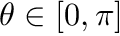, 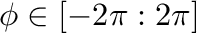 and 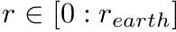 .
Discretization is based on a regular, curvilinear grid approach. It splits into two parts:
- The computational domain becomes divided into elements. Each coordinate direction is cut into 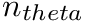, 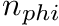, 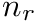 equally spaced pieces.
- Each element will be sampled at the so called N+1 GLL collocation points (see gll_mod).
This module expects to find a parameter parameters_mod::real_kind in a module named parameters_mod which defines the accuracy of floating point numbers.
In addition it relies on a function gll_mod::get_knots(N) - returning the N+1 GLL points - which has to be provided by a module named gll_mod.
Function/Subroutine Documentation
◆ coordinates_1d()
|
private |
Returns a 1d coordinate field, an array of rank 2.
The coordinate values 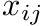 of the returned array are covering the interval starting from the passed argument min to max 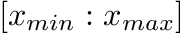. That are the lower and upper bounds.
The first index 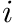 is counting the elements. It ranges from 1 to the passed argument elms, 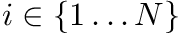. The element width delta is equally spaced 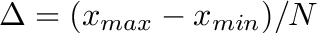.
The second index 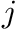 is counting the actual collocation points inside of an element . It ranges from 0 to the passed argument lpd, 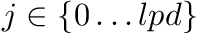. The points inside of an element are arranged acording to the GLL collocation points. For details see gll_mod::get_knots().
As in all FEM approaches, this means that the upper and lower coordinate values in adjacent elements are identical 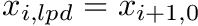.
- Bug:
- How to ensure that boundaries of neighboring elements are matching seamlessly i.e. coords(i,lpd) == coords(i+1,0)? In the case of gaps points may slip through. In particular this crucial amongst MPI partitions.
- Warning
- In Ses3d-NT r coordinates are upside down. Thus, min and max have to be interchanged
- Parameters
-
elms Number of elements lpd Lagrange polynomial degree min Lower coordinate bound max Upper coordinate bound
- Returns
- 1d coordinate array of rank 2 and shape 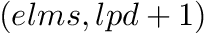
Definition at line 114 of file coordinates_mod.f90.
◆ pack_r2tor1()
| pure real(real_kind) function, dimension(size(r2, dim=1)*(size(r2, dim=2)-1)+1), public coordinates_mod::pack_r2tor1 | ( | real(real_kind), dimension(:,:), intent(in) | r2 | ) |
Packs Ses3d-NT's rank 2 arrays into an array of rank one with dropping duplicates.
Definition at line 289 of file coordinates_mod.f90.
◆ phi_coordinates_3d()
|
private |
Returns a 3d field filled with phi coordinates.
Actually this is not doing much more than a reshape. It translates the array of rank 2 representing the 1d coordinate vector - retrieved through coordinates_1d() - into an array of rank 6 which corresponds to to the 3d coordinate field.
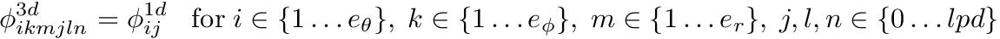
- Parameters
-
elms_theta Number of elements in 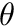 direction elms_phi Number of elements in 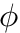 direction elms_r Number of elements in  direction
direction lpd Lagrange polynomial degree min Lower bound of coordinates max Upper bound of coordinates
- Returns
- 3d theta coordinates array of rank 6 and shape 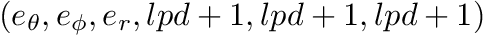
Definition at line 213 of file coordinates_mod.f90.
◆ r_coordinates_3d()
|
private |
Returns a 3d field filled with r-coordinates.
Actually this is not doing much more than a reshape. It translates the array of rank 2 representing the 1d coordinate vector - retrieved through coordinates_1d() - into an array of rank 6 which corresponds to to the 3d coordinate field.
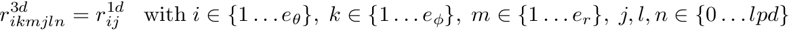
- Warning
- In Ses3d-NT r coordinates are upside down. Thus, min and max have to be interchanged
- Parameters
-
elms_theta Number of elements in direction elms_phi Number of elements in direction elms_r Number of elements in direction lpd Lagrange polynomial degree min Lower bound of coordinates max Upper bound of coordinates
- Returns
- 3d theta coordinates array of rank 6 and shape
Definition at line 263 of file coordinates_mod.f90.
◆ theta_coordinates_3d()
| real(real_kind) function, dimension(elms_theta, elms_phi, elms_r, lpd+1, lpd+1, lpd+1) coordinates_mod::theta_coordinates_3d | ( | integer, intent(in) | elms_theta, |
| integer, intent(in) | elms_phi, | ||
| integer, intent(in) | elms_r, | ||
| integer, intent(in) | lpd, | ||
| real(real_kind), intent(in) | min, | ||
| real(real_kind), intent(in) | max | ||
| ) |
Returns a 3d field filled with theta-coordinates.
Actually this is not doing much more than a reshape. It translates the array of rank 2 representing the 1d coordinate vector - retrieved through coordinates_1d() - into an array of rank 6 which corresponds to to the 3d coordinate field.
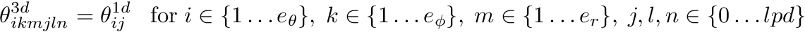
- Parameters
-
elms_theta Number of elements in direction elms_phi Number of elements in direction elms_r Number of elements in direction lpd Lagrange polynomial degree min Lower bound of coordinates max Upper bound of coordinates
- Returns
- 3d theta coordinates array of rank 6 and shape
Definition at line 166 of file coordinates_mod.f90.